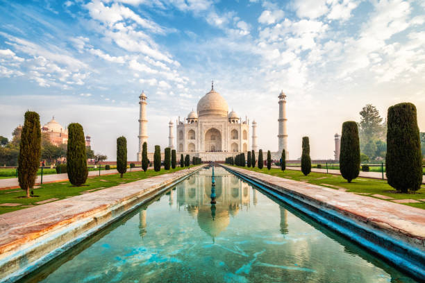
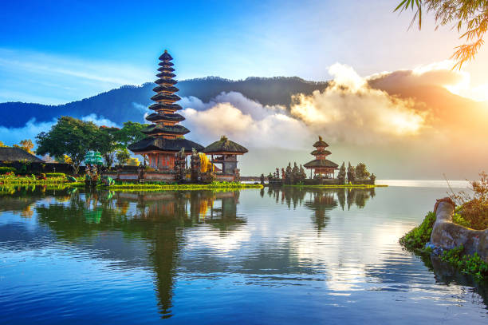

Тадж Махал, Индия
Тадж Махал, символ вечной любви, является одним из величайших архитектурных чудес мира. Это белоснежное мраморное сооружение с изысканной орнаментикой и садами, окруженными водой, создает впечатление непередаваемой красоты и гармонии.
Подробнее

Бали, Индонезия
Бали, остров богов, привлекает путешественников своими вулканическими пляжами, живописными рисовыми террасами и духом богатой индонезийской культуры. Этот тропический рай предлагает спокойный уединенный отдых и возможности для занятий серфингом, дайвингом и йогой на природе.
Подробнее